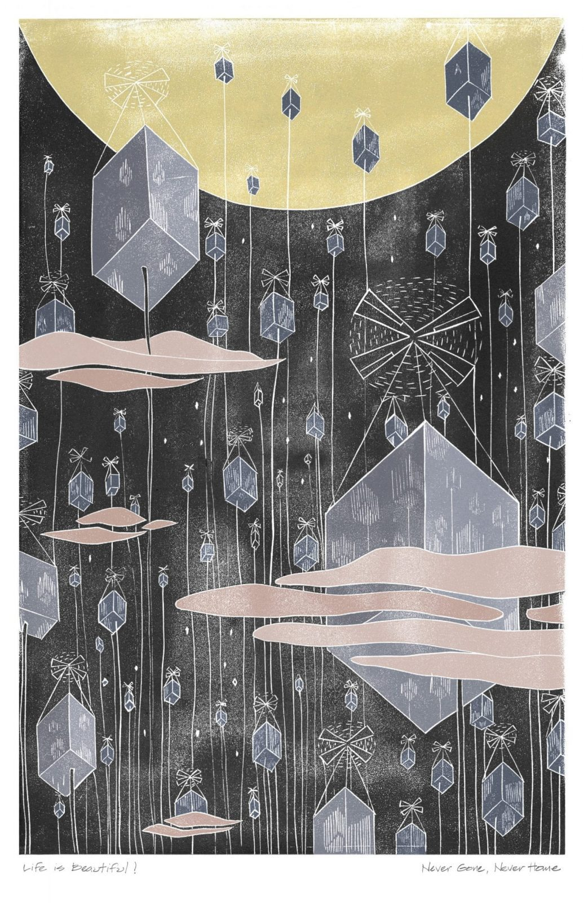
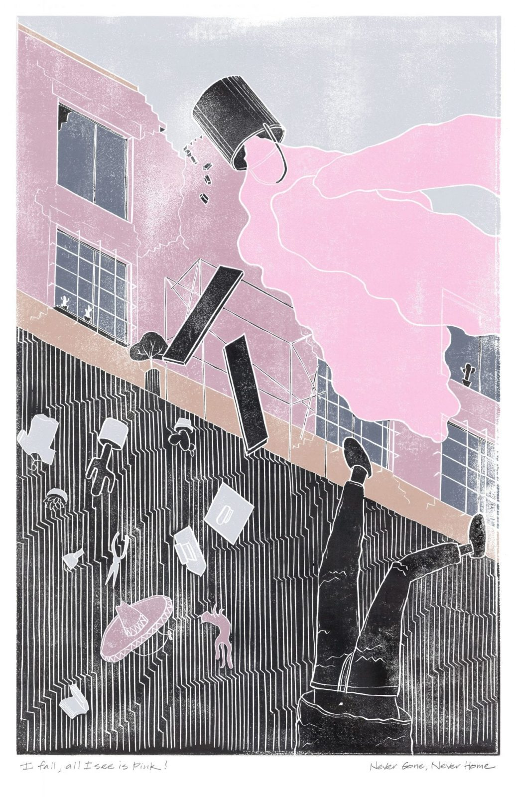
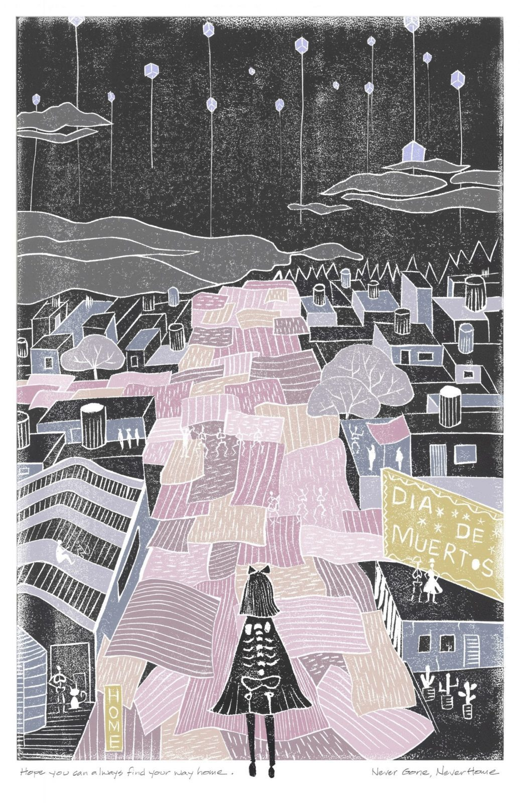

Fairy Tales Competition
Story and Illustrations: Siyu Qu, Peipei Sun, Kejia Zhang
I fell. All I saw was pink.
“Tocotocotoco…”
A throbbing noise got louder and louder. I woke up feeling exhausted. I slowly rolled out of my bed and saw a small delivery cube. I looked around the room and wondered where I was. I recalled mixing pink paint for Gabriela’s house. Suddenly, all the buildings were swaying and crashing into one another. An enormous crack opened in the ground. I thought for sure I died from the fall. Was that just a terrifying dream about an earthquake?
I was confused.
“Hello sir,” a robot-like voice said, interrupting my thoughts. “This is Food Delivery Cube 5891. Your order has arrived.”
I opened the delivery box and the familiar smell of a huevos burrito permeated the entire room. It was my favorite breakfast. Strangely, I remembered that I used to grab this from my friend Juan’s street stand.
“Whoever invented this delivery cube is a genius.” I said aloud, unconsciously. But then again, I also enjoyed chatting and laughing with Juan. Wait, was talking to Juan every morning also a dream? Why did my dreams feel so vivid?
I tumbled into my bed and all the memories from the other city flooded back and drowned me. I clearly remembered the last day I was in the other city.
A monitor in the room turned on automatically. “Newly reported by the Earthquake Information Center: Since human beings evacuated up to Cube City, we just detected that the 3,000,000th earthquake has happened on the earth-level. Today is also Cube City’s 100th Independence Day. What a joyful moment!”
A festive song started playing and my mind drifted back to the reality where I was in Cube City. Humans live suspended, floating their homes high above Earth’s atmosphere to avoid the constant threat of earthquakes.
“Hey José, it’s Félix!” My coworker appeared on the monitor. “Any plans for today? Are you coming to our Cube Company’s party to celebrate Independence Day?”“I need to fix the wall cracks for Gabriela,” I responded without thinking.“What? Fixing walls? Only ancient people do that. We’ll just replace old cubes with new cubes. Anyway, are you going to the party? I can get you a cube-taxi.”“Right, right. Sure, I’ll go.”
The conversation continued to bring me back to this reality. In this world, I worked as a glass cube fabricator building everyone’s floating homes. But, my head was still hurting from the mixed memories.
“Beep beep!” A ringtone woke me up.
“Damn the earthquake,” Gabriela complained over the phone. “José, can you come and fix my wall cracks again?”
“Absolutely,” I replied. “I will be there soon.” I picked up my tool belt and headed out to the street.
Earthquakes were common in this city, so houses were limited to two stories for safety reasons. As a result, buildings were densely packed together to accommodate the high housing demand. People extended their homes and daily lives to open spaces like alleys, courtyards and markets, all of which were essential to community life. Juan’s breakfast stand was in a market next to Gabriela’s house.
I quickly snaked through the crowds, following the seducing scent of the huevos burritos.
“Hola,” Juan said, greeting me. “Same thing today? Whose house are you heading to?”
“Hola, my friend,” I replied. “The same thing please. I’m going to Gabriela’s house, again. Her old house needs lots of repairs.”
“Sure. The earthquakes are strong and frequent these days. Be careful, okay?”
“I am used to it. But, I’ll be careful.”
“Here you go, one hot huevos burrito.”
“Gracias, amigo!”
I started digging into the burrito right away while I was heading to Gabriela’s house.
“What took you so long?” Gabriela said, waiting for me on her roof patio.“Well,” I replied. “I needed to stop by the market to say hi to my friends, grab breakfast and get some pink paint for your house. You know, the market is one of my favorite places in the city. It has everything I need.”“Alright, alright, I agree. Thanks to the market, I don’t need a big kitchen or storage at home because the market is my walk-in fridge and closet.”“Absolutely!” I walked up to the patio and asked, “So, where should I start?”“Anywhere you see a crack.”“That means everywhere,” I groaned. “Gabriela, I wish I had the magic to fix your house once and it would never get damaged by the earthquakes again.”“Dear God, me too,” Gabriela joked.
I climbed up the ladder with a bucket of pink stucco and started troweling. Suddenly, the Earth began to shake. An earthquake was happening, again! The next moment I realized, the pink stucco was flying through the air.
I fell. All I saw was pink.
Life in Cube City is beautiful. We believe in equality, freedom and independence. We all live in identical cubes that are highly tested for safety and comfort. Cubes can fly us anywhere in the sky and have all the functionalities we need for a quality life.
All cubes have gorgeous views looking out through the glass walls, but for privacy, no one can see inside the glass from the outside. I love looking out at dawn and dusk. I also love staring at the other floating cubes that glow day and night. Sometimes, I wonder what’s happening inside each cube.
A familiar melody of the festival song whispers in my ears. Tomorrow will be the 110th Independence Day of Cube City. On every Independence Day, we celebrate our earthquake-free world. It’s also the day parents send kids to their individual cubes to start living their dreams when they’re old enough.
“My dearest girl,” I whisper. “I hope you can always find your way home.”
This year’s Independence Day is special for me because my daughter, Jade, will move to her own cube and start a new chapter in her life.
“Dad, I’m going to bed,” Jade says, giving me a good night kiss.
“My dear Jade,” I say. “Let me tell you one last story before you move out tomorrow. It’s a story about a colorful city.
“Once upon a time, there was a colorful city where houses were built instead of cubes. The citizens believed that their houses were not merely a place to live, but a place that held memories of the past. Houses were built close to each other and winding streets were paved between them. People loved to take different paths to explore the city and meet friends on their journey.
“On Dia de los Muertos, the Day of the Dead, deceased family members are allowed to return home for one night. But, if their homes were replaced with new houses, the deceased would not be able to find their way home. So, houses were repaired and extended to accommodate their family’s changing needs, instead of getting demolished.
“Each house was also unique. Colors and patterns represented each family’s individual charm…”
Jade falls asleep before I can finish my story.
“My dearest girl,” I whisper. “I hope you can always find your way home.”
